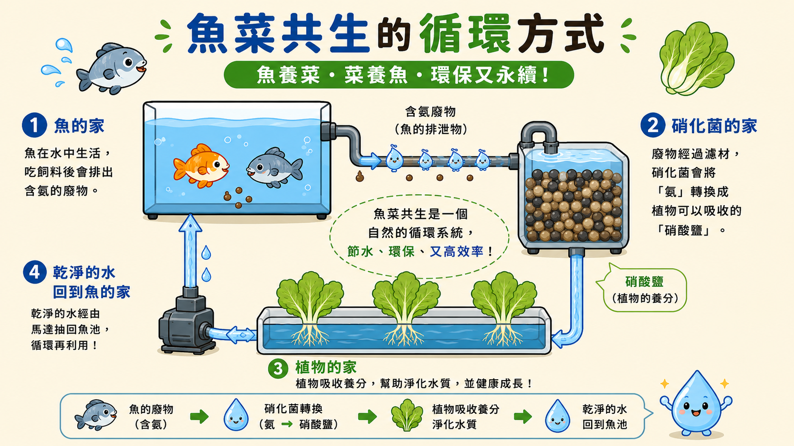

【待補：創辦人的名字、背景，以及第一次接觸魚菜共生的場景。一兩個具體細節就好，例如在哪裡看到、當時在做什麼工作。】
魚菜共生的原理不新：魚的排泄物變成植物的養分，植物把水濾乾淨再還給魚。難的是讓它穩定。水溫差兩度、酸鹼值偏一點，魚會生病，菜也長不好。傳統做法靠人每天去量、去看，所以很難做大。
先把系統看清楚
2024 年，我們開始研究把物聯網感測器裝進魚菜共生系統。水溫、酸鹼值、溶氧量全天記錄，數值不對就推播到手機。
我們想先搞懂它什麼時候會出問題，再談種菜。
北投的十二坪
2025 年，我們拿到新創補助，在北投學園路蓋了第一座示範農場，只有十二坪。第一批萵苣【待補：第一批收成的情況，好或不好都可以寫，真實的挫折最能讓人記住】。

慢慢地，我們把萵苣種到十個品種，再加上羽衣甘藍和芝麻葉。因為是水耕，每顆萵苣都連根出貨，放冰箱可以放比較久。
為什麼開始賣別人的東西
2026 年我們正式對外販售。【待補：為什麼決定和其他農場合作的真實原因】
第一家合作的是桃園大溪的添丁養生黑木耳，他們的菇都通過有機認證。上架的條件很簡單：我們自己去過、看過怎麼種，也願意買回家吃。
魚菜共生怎麼運作
魚的排泄物被水裡的硝化菌分解成養分，萵苣吸收養分、把水濾乾淨，乾淨的水再流回魚池。整個循環不需要化學肥料，用水比土耕少約九成。

農場裡的感測器全天記錄水溫、酸鹼值和溶氧，數值一偏掉，手機就會收到通知。
走過的路
- 開始研究把物聯網感測器用在魚菜共生
- 取得新創補助，在北投蓋了十二坪的示範農場
- 正式販售，開放 LINE 下單與到貨通知，與添丁養生黑木耳合作（年份待確認）
- 計畫擴建第二座農場，推出家用魚菜共生套件